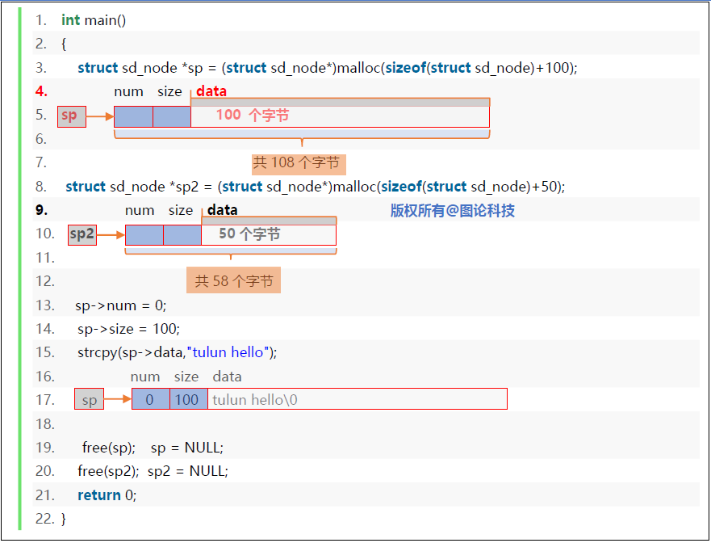
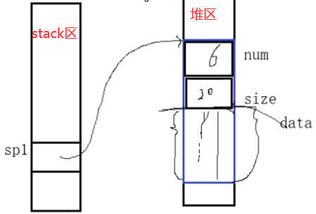
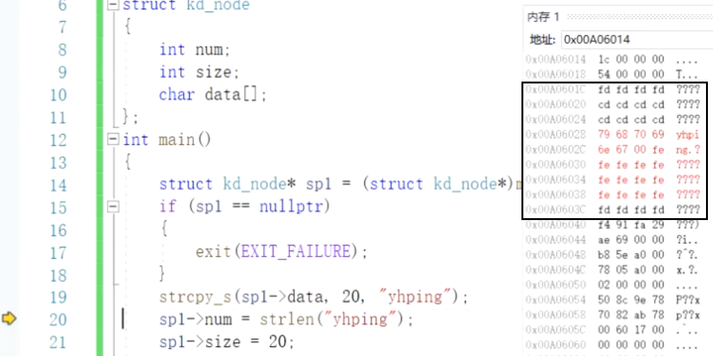
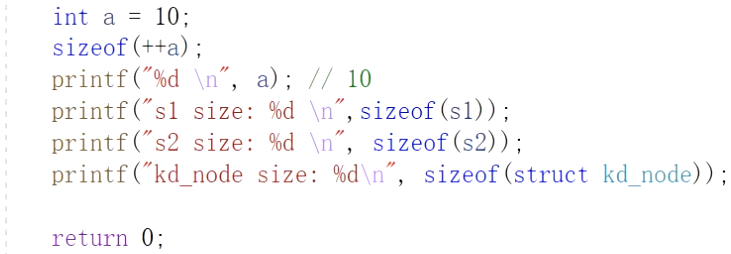
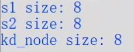
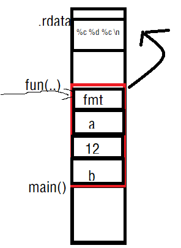

SDS指simple dynamic string，即简单动态字符串。
Memcached与Redis的区别和选择https://blog.csdn.net/qq_18671415/article/details/104540628
https://zhuanlan.zhihu.com/p/183993817
Redis 这几年的大热，现在已经替代 Memcached 成为缓存技术的首要中间件，作为大厂的带头兵，在 BAT 里面，Redis 也已经逐渐取代了 Memcached，广泛使用 Redis 作为缓存应用方案。
1）速度更快
Memcached 使用的是多线程模型，既然是多线程，就会因为全局加锁而带来性能损耗。而 Redis 使用的是单线程模型，没有锁竞争，速度非常快。
2）数据类型更丰富
Memcached 数据类型非常单一，只支持 String 数据类型，在业务实现上就非常有瓶颈。
而 Redis 支持 string(字符串)、hash(哈希)、list(列表)、set(集合)、zset(sorted set:有序集合) 等……丰富的数据类型可以让 Redis 在业务上大展拳脚。
这也是 Redis 能代替 Memcached 最重要的原因之一。
并且，Memcached 值最大上限为：1M，而 Redis 最大可以到：1GB。
3）数据持久化
Memcached 不支持持久化，Redis 支持。
缓存服务器断电后，Memcached 的数据是不能恢复的，而 Redis 可以将数据保久化在磁盘中，服务器重启的后可以加载再次使用，不会造成数据断电丢失。
比如，有些数据是直接放在缓存数据库中的，其他地方可能没有备份，如果丢失了，那可能会造成业务影响，这也是 Redis 非常有用的一个保障特性。
先看一个结构体的设计
1 2 3 4 5 6 7 8 #define MAXLEN 1024 typedef struct kd_node { struct kd_node * left ; struct kd_node * right ; int dim; unsigned long long data[MAXLEN]; }kd_node;
在上面这段代码中，为了存储数据，申请了长度为1024的unsigned long long型数组。若是数据的长度远远小于MAXLEN，这样的设计是很浪费空间的。
对于数组，我们的原则是大开小用（尽可能开辟足够的空间，但使用时不能全都用上）。而对于动态内存分配，我们就可以更加的灵活运用，但代价是使用完后要释放掉。
C99标准中给出了新的设计方法，通过柔性数组可以解决这个问题。
1 2 3 4 5 6 7 8 9 10 11 struct sd_node { int num; int size; char data[]; }; int main () { sizeof (struct sd_node); }
在struct sd_node结构体中data仅仅是一个待使用的标识符，不占用存储空间。
用途：柔性数组的主要用途是为了满足长度可变的结构体。
用法：在一个结构体的最后，声明一个长度为0的数组，就可以使得这个结构体是可变长的。对于编译器来说 ，此时长度为0的数组并不占用空间，因为数组名本身不占空间，它只是一个偏移量。数组名这个符号本身代表了一个不可修改的地址常量 。但对于这个数组的大小，我们可以进行动态分配。
注意：如果结构体是通过calloc/malloc/realloc等动态分配方式生成的，在不使用时需要释放相应的空间。
优点：比起在结构体中声明一个指针变量再进行动态分配的做法，柔性数组方法效率要高，因为简单。
缺点：在结构体中，数组为0的数组必须在最后声明，在设计结构体类型时有一定限制。

1 2 3 4 5 6 7 8 9 10 11 12 13 14 15 16 17 18 19 int main () { struct kd_node * sp1 =struct kd_node*)malloc (sizeof (struct kd_node)+20 ); if (sp1==nullptr) { exit (EXIT_FAILURE); } strcpy_s(sp1->data,20 ,"yhping" ); sp1->num = strlen ("yhping" ); sp1->size = 20 ; printf ("size: %d \n" ,sp1->size); printf ("num: %d \n" ,sp1->num); printf ("data: %s \n" ,sp1->data); free (sp1); sp1 = nullptr; return 0 ; }



运行结果

sizeof的运算只发生在编译时期，因此只计算变量的类型的大小，经典的例子就是sizeof(++a)，再次输出a时发现没有+1，是因为sizeof(++a)根本没有执行。
1 2 3 4 5 6 7 8 9 10 11 12 13 14 15 16 struct kd_buff { int num; int size; char * buff; }; int main () { kd_buff* p = (kd_buff*)malloc (sizeof (kd_buff)); p->buff = (char *)malloc (sizeof (char )*strlen ("yhping" )); strcpy (p->buff,strlen ("yhping" ),"yhping" ); p->num = strlen ("yhping" )-1 ; p->size = strlen ("yhping" ); }
显然，指向字符串指针的方法的操作起来比柔性数组操作起来要繁杂一些。
而且，这种结构需要分两次申请空间，导致到最后必须释放两次。而柔性数组只申请一次空间，最后释放时直接释放一次即可。因此，综合考虑，柔性数组明显是优于上述结构的。
exit(), _exit(), return, abort()函数的区别https://blog.csdn.net/lyf47/article/details/44203499
在Redis中我们采用的是abort();
1 2 3 4 5 static void adsOomAbort () { fprintf (stderr ,"SDS: out of memory \n" ); abort (); }
abort()
exit(EXIT_FAILURE)
_exit()
1 2 3 4 5 6 7 8 9 10 11 12 13 14 15 16 17 18 typedef sds char *;void sdsclear (sds s) { struct sdshdr * sh =struct sdshdr*)s-sizeof (struct *(sdshdr)); sh->free +=sh->len; sh->len=0 ; sh->buf[0 ]='\0' ; } sds sdscat (sds stra,sds strb) { struct sdshar * sh_a =struct sdshdr*)stra-sizeof (struct *(sdshdr)); struct sdshar * sh_b =struct sdshdr*)strb-sizeof (struct *(sdshdr)); if (sh_a->free >=str->free ) { memcpy_s("" ) } stra[6 ] }
函数原型为void *memcpy(void *destin, void *source, unsigned n)。函数的功能是从源内存地址的起始位置开始拷贝若干个字节到目标内存地址中，即从源source中拷贝n个字节到目标destin中。
即以空字符结尾的字符数组。
在.rdata数据区里
数组存放
堆区开辟，并用strcpy_s(cp,10,“yhping”);复制
1 2 3 4 5 int main () { char * cp = (char *)malloc (sizeof (char )*10 ); strcpy_s(cp,10 ,"yhping" ); }
1 2 3 4 5 6 7 8 9 10 11 12 13 14 15 16 17 18 19 20 21 22 23 24 25 26 27 28 29 30 31 32 33 34 35 typedef char * sds;struct sdshdr { int len; int free ; char buf[]; } sds sdsnewlen (const void *init, size_t initlen) { struct sdshdr *sh ; sh = zmalloc(sizeof (struct sdshdr)+initlen+1 ); #ifdef SDS_ABORT_ON_OOM if (sh == NULL ) sdsOomAbort(); #else if (sh == NULL ) return NULL ; #endif sh->len = initlen; sh->free = 0 ; if (initlen) { if (init) memcpy (sh->buf, init, initlen); else memset (sh->buf,0 ,initlen); } sh->buf[initlen] = '\0' ; return (char *)sh->buf; } sds sdsnew (const char *init) { size_t initlen = (init == NULL ) ? 0 : strlen (init); return sdsnewlen(init, initlen); } int main () { sds sdsp = sdsnew("yhping" ); }
sdsnew/sdsnewlen
其中sdsnew调用了sdsnewlen
sdsempty
创建柔性数组内只含有'\0'的sdshdr
创建sdshdr的副本
sdslen返回已使用空间字节数即len；sdsavail返回未使用空间字节数即free。
对应于创建sdshdr的sdsnew，即释放sdshdr
惰性释放，只删除字符串内容，更新len属性和free属性，结构保留。
1 2 3 4 5 6 7 void sdsclear (sds s) { struct sdshdr * sh =struct sdshdr*)(s-sizeof (struct sdshdr)); sh->free += sh->len; sh->len=0 ; sh->buf[0 ]='\0' ; }
将柔性数组长度扩展到指定长度，多余空间用’\0’填充。
1 2 3 4 5 6 7 int a=10 ,b=20 ;char buff[20 ];printf ("a=%d b=%d\n" ,a,b);sprintf (buff,"a=%d b=%d \n" ,a,b);sprintf_s(buff,20 ,"a=%d b=%d \n" ,a,b);
1 2 3 4 int a = 10 ,b = 20 ;char buff[20 ];int len = sprintf (buff,"a = %d b = %d \n" ,a,b);sprintf (buff,20 ,"a = %d b = %d \n" ,a,b);
1 2 3 4 5 6 7 8 9 10 11 12 13 14 15 16 17 18 19 20 21 22 23 24 25 26 27 28 29 30 31 32 33 34 35 36 void funa (int a,char cx,int b,char cy) { printf ("%p => %d \n" ,&a,a); printf ("%p => %c \n" ,&cx,cx); printf ("%p => %d \n" ,&b,b); printf ("%p => %d \n" ,&cy,cy); } void funb (int a,float ft,double dx,char c) { printf ("%p => %d \n" ,&a,a); printf ("%p => %f \n" ,&ft,ft); printf ("%p => %f \n" ,&dx,dx); printf ("%p => %c \n" ,&c,c); } void fun (int num, ...) { int * p = # int * p1 = p+1 ; printf ("%d\n" ,*p1); int * p2 = p1+1 ; printf ("%c\n" ,*p2); int * p3 = p2+1 ; printf ("%d\n" ,*p3); int * p4 = p3+1 ; printf ("%c\n" ,*p4); } int main () { funa(12 ,'a' ,23 ,'b' ); funb(12 ,12.25 ,25.50 ,'b' ); fun(3 ,'a' ,12 ,'b' ); return 0 ; }
1 2 3 4 5 6 7 8 void fun (const char * fmt, ...) { } int main () { fun("%c %d %c \n" ,'a' ,12 ,'b' ); }

1 2 3 4 5 6 7 8 9 10 11 #include <stdarg.h> void fun (const char * fmt, ...) { va_list ap = nullptr; va_start(ap,fmt); va_start(ap,char ); va_start(ap,int ); va_start(ap,char ); va_end(ap); }
1 2 3 4 5 6 7 8 9 10 11 12 13 14 15 16 17 18 19 20 21 22 23 24 25 26 27 28 29 30 31 32 33 34 35 36 37 38 39 40 41 42 43 44 45 46 #include <stdarg.h> void fun (const char * fmt, ...) { va_list ap = nullptr; char * p = nullptr, * sval = nullptr; int ival = 0 ; double dval = 0 ; va_start(ap,fmt); for (p=fmt;*p!='\0' ;++p) { if (*p!='%' ) { switch (*++p) { case 'd' : ival = va_arg(ap,int ); printf ("%d" ,ival); break ; case 'f' : fval = va_arg(ap,float ); printf ("%f" ,dval); break ; case 's' : sval = va_arg(ap,char *); printf ("%s" ,sval); break ; default : putchar (*p); break ; } } } va_end(ap); } int main () { fun("a = %d\nft = %f\nstr = %s\n" ,12 ,12.25f ,"hello tulun" ); }